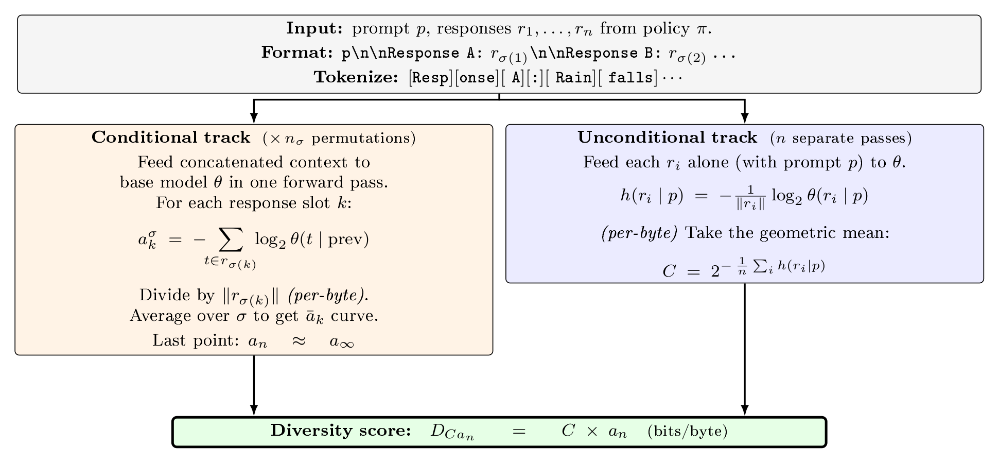

\(\boldsymbol{D_{Ca_n} = C \times a_n}\)
plausibility-weighted residual diversity (bits/byte)
A per-byte score read off a base model’s per-token log-probabilities, with no embedding model, no reference corpus, and no human labels.

The same pipeline scores AI samples and human-written response sets.